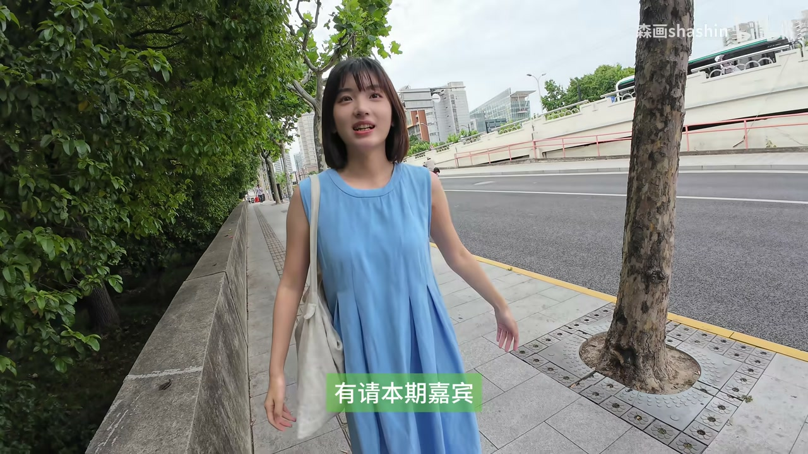
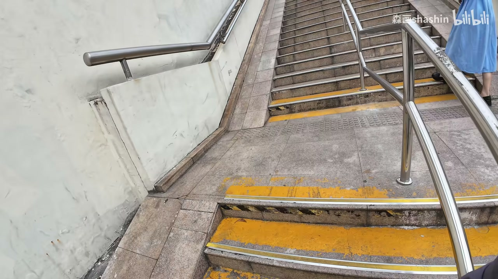
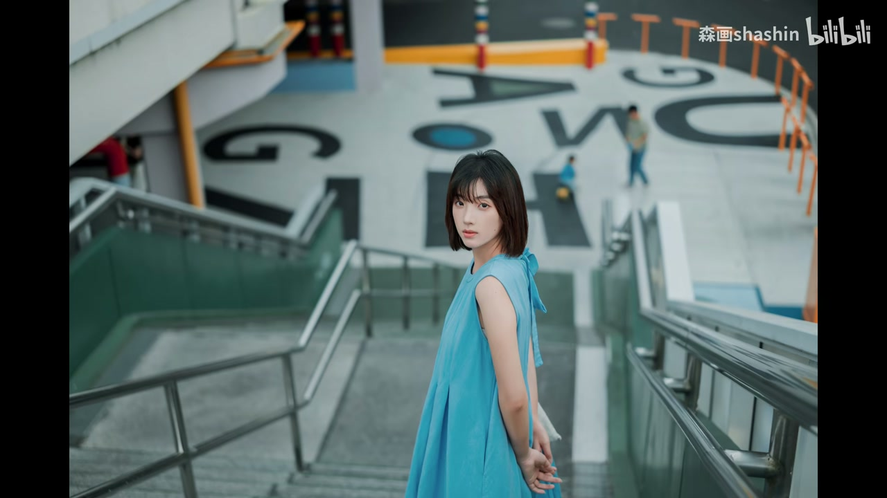
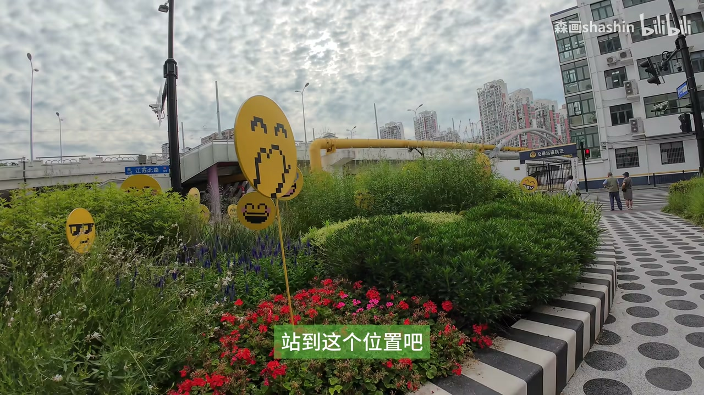
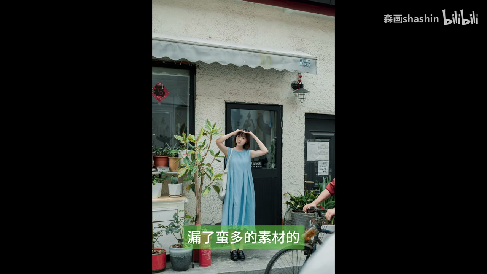

01
中文
大家早中晚好，我是摄影师森华，本期Citywalk我们来到了上海。
EN
Good morning, afternoon, or evening, everyone. I'm photographer Senhua, and in this Citywalk episode we're in Shanghai.
表达提示Good morning, afternoon, or evening（早中晚好，万能的打招呼）；photographer（摄影师）

Scene English · 摄影教学 · 上海Citywalk
Mori's Travel Log Ep.5: Citywalk in Shanghai Is as Easy as Drinking Water
🎧 语音讲解
Opening: A Citywalk on a Rainy Day
情境摄影师森华介绍本期：在上海两天拍两组图，遇到阴雨天没太多发挥空间，于是拍一组Citywalk。设备是适马BF加50mm F2镜头。语域：摄影教学口播，轻松开场。
大家早中晚好，我是摄影师森华，本期Citywalk我们来到了上海。
Good morning, afternoon, or evening, everyone. I'm photographer Senhua, and in this Citywalk episode we're in Shanghai.
表达提示Good morning, afternoon, or evening（早中晚好，万能的打招呼）；photographer（摄影师）
不过遇到阴雨天，确实没有什么发挥空间，那就拍组Citywalk吧。
But with this overcast, rainy weather, there's not much room to show off — so let's shoot a Citywalk.
表达提示overcast, rainy weather（阴雨天）；no room to show off（没发挥空间）；shoot a Citywalk（拍一组Citywalk）
使用的设备是适马BF，镜头是适马50mm F2。
I'm using a Sigma BF with a Sigma fifty-millimeter F2 lens.
表达提示fifty-millimeter lens（50mm镜头）；F2（大光圈）
没什么发挥空间 → no room to show off / not much to work with
拍一组Citywalk → shoot a Citywalk / do a street-walk photo set

Pose One: Sit Without Leaning
情境摄影师引导模特在朝阳路墙边坐姿：整个人坐上去不要有靠的感觉，膀子往后架着，头靠上去，手背在身后。语域：现场引导指令，短句频出。
整个人坐上去，就是不要有靠的感觉。
Sit on it, but don't look like you're leaning on anything.
表达提示don't look like you're leaning（不要有靠的感觉）；sit on it（坐上去）
你的膀子往后这样架着，然后头靠在这个上面。
Prop your arms back like this, then rest your head on it.
表达提示prop your arms back（胳膊向后架）；rest your head on（把头靠在…上）
手背在后面，对，很好看。
Put your hands behind your back — yes, that looks great.
表达提示put your hands behind your back（手背在身后）；looks great（很好看）
向后架着 → prop your arms back / push your elbows back
很好看 → that looks great / very nice / stunning

Pose Two: The Steel Wall & the Binoculars
情境模特蹲在不锈钢墙边做「手比望远镜」的姿势，摄影师指导蹲下、站位、轻轻躺下的角度。语域：摄影引导，动作指令。
你蹲在这个不锈钢这儿，来个手比望远镜。
Squat by the stainless steel wall and make a binoculars gesture with your hands.
表达提示squat（蹲下）；a binoculars gesture（手比望远镜）
蹲下来再这样，站到这个位置吧。
Get down lower like this, then stand over here.
表达提示get down lower（再蹲低点）；stand over here（站到这边）
你从那个位置往我这儿走，3、2、1，走。
Walk toward me from that spot — three, two, one, go.
表达提示walk toward me（往我这边走）；three, two, one, go（3、2、1，走）
蹲下来 → squat down / get down lower / crouch
往我这儿走 → walk toward me / walk my way

Borrowing a Watering Can
情境摄影师向叔叔借浇花壶给模特拍「浇花」画面，礼貌请求与道谢，运动相机在这之后自动关机，丢了部分素材。语域：中文礼貌口语+拍摄记录。
叔叔，我可以借一下这个浇花壶拍张照吗？
Uncle, may I borrow this watering can for a photo?
表达提示borrow ... for a photo（借…拍张照）；watering can（浇花壶）
可以的，那我倒一点水。
Sure, let me pour a little water.
表达提示sure（可以的）；pour a little water（倒一点水）
在这个之后，运动相机就自动关机了，露了蛮多的素材。
Right after that, the action camera shut itself off, and we lost a lot of footage.
表达提示action camera（运动相机）；shut itself off（自动关机）；lose footage（丢素材）
借一下…拍张照 → borrow ... for a photo / could I use ... to take a picture
丢素材 → lose footage / missed a lot of shots

Wrap-Up: Three, Two, One, Look Back
情境最后一张图用「回头」的动作收尾，摄影师和嘉宾道别，约定下次见。语域：拍摄引导收尾，轻松道别。
3、2、1，回头。
Three, two, one — look back.
表达提示look back（回头看）；拍摄引导常用口令
谢谢叔叔。
Thank you, uncle.
表达提示感谢用语，中文礼貌语境
拜拜，下次见咯。
Bye-bye, see you next time.
表达提示see you next time（下次见）；轻松道别
回头 → look back / glance over your shoulder
下次见 → see you next time / catch you later
开场介绍自己这期要拍什么
引导模特摆坐姿
向路人借道具
拍摄结束道别
「自动关机」是 shut itself off / auto shut down，不是 off itself（把 off 当动词是错的）。
walk to here 不自然，用 come over here 或 walk toward me。
borrow ... to do / for ... 结构；两个动词不能直接堆叠。
形容「人好看/姿势好看」用 looks great / flattering；good-looking 通常修饰人而非姿势。